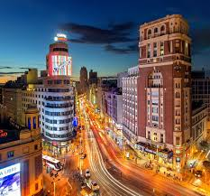
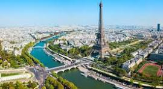
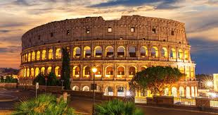

Europa

Madrid
Madrid, la capital de España, combina historia, arte y una animada vida urbana. Sus museos de fama mundial, plazas históricas y excelente gastronomía convierten a la ciudad en un lugar ideal para disfrutar de la cultura y el ambiente español.

París
París, conocida como la Ciudad del Amor, es uno de los destinos más románticos y culturales del mundo. Con monumentos icónicos como la Torre Eiffel, museos famosos y encantadoras calles, ofrece una experiencia única llena de arte, historia y gastronomía.

Londres
Una ciudad llena de historia, cultura y diversidad. Sus monumentos emblemáticos, como el Big Ben o el Palacio de Buckingham, junto con sus museos, parques y barrios modernos, hacen de la capital británica un destino fascinante para cualquier viajero.

Roma
Roma, conocida como la Ciudad Eterna, es un auténtico museo al aire libre. Sus monumentos históricos como el Coliseo, el Foro Romano y el Vaticano reflejan siglos de historia y cultura, convirtiéndola en uno de los destinos más impresionantes de Europa.